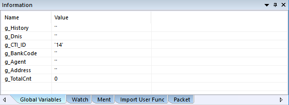
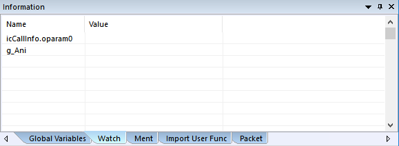
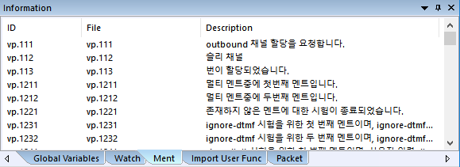
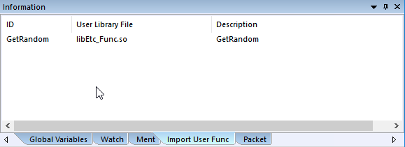
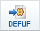
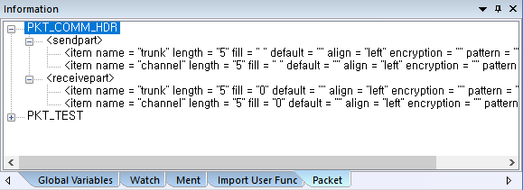
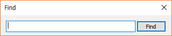

프로젝트가 오픈 될 때 전역 변수, 멘트, DLL, 전문이 정의 되어 있다면 여기에 표시 됩니다.
Global Variables Tab

· Global.ssfx에 정의된  아이템의 전역변수 들을 표시 합니다.
아이템의 전역변수 들을 표시 합니다.
Name : 변수이름
Value : 초기값

· 디버깅 시에 아이템의 변수를 Get / Set 할 수 있습니다.
Ment Tab

· Global.ssfx에 정의된  아이템에 설정된 멘트 리스트를 표시 합니다.
아이템에 설정된 멘트 리스트를 표시 합니다.
ID : 멘트 ID
File : 실제 멘트 파일 이름
Description : 멘트 파일 내용 설명
· 리스트에서 항목 하나를 마우스 더블 클릭하면 멘트가 재생 됩니다. 다른 항목을 더블 클릭하면 재생되던 멘트가 있으면 중지하고 현재 클릭한 멘트가 재생 됩니다.
리본 메뉴 Tools > Options > Debug/Ment 탭의 Ment Path가 설정되어 있어야 하고 설정된 경로에 실제 멘트 파일이 있어야 합니다
Import Dlls Tab

· Global.ssfx에 정의된

아이템에 설정된 User Function 리스트를 표시 합니다.
ID : 함수 이름(라이브러리에 속한)
User Library File : 라이브러리 이름
Description : 함수 설명
Packets Tab

· Global.ssfx에 정의된 아이템에 설정된 전문 내용을 표시 합니다.
검색 기능
· Global Variables, Ment, Import User Func 탭에 대하여 검색 기능을 제공합니다.
해당 탭에서 마우스 오른 버튼을 누르면 검색 창이 팝업 되며 검색 문자(열) 입력 후 Find 버튼 또는 Enter 키를 누르면 검색이 되며 이후 검색 창은 사라지나 F4버튼을 누르면 검색된 내용중 다음으로 이동한다.
